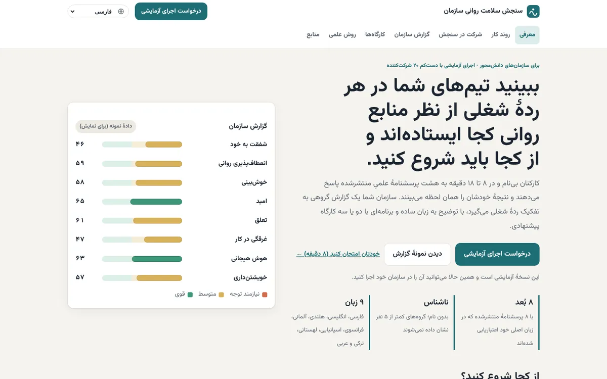
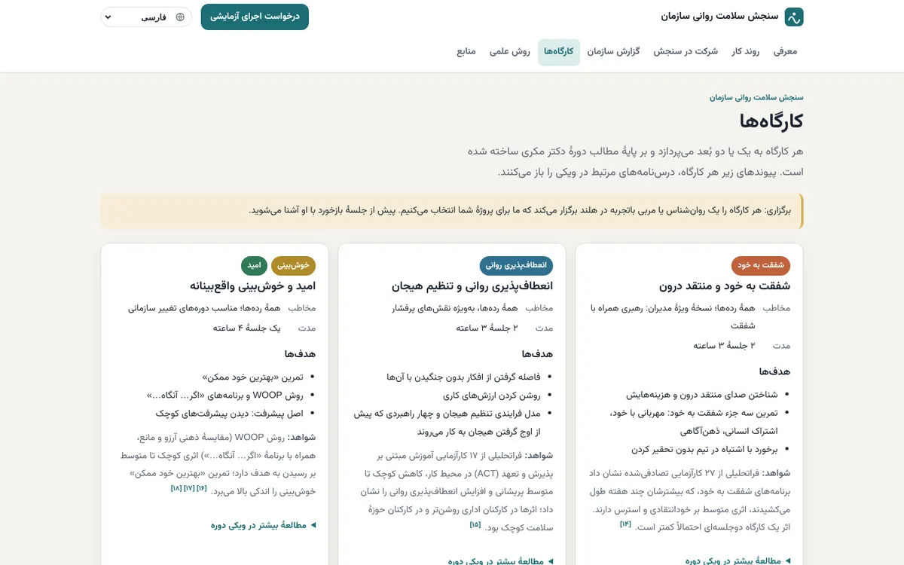

نام محصول: Workplace Wellbeing Check
پیشبینی هوای درونی یک تیم
چطور «هوای تیم» را طراحی کردم: سنجش ناشناس سلامت روانی برای سازمانهای هلندی، با علم معتبر برای کارمند، گزارشی روشن برای منابع انسانی، و برنامهای برای کسی که بودجه دستش است.

مسئله
سلامت روانی در ترازنامهٔ سازمان دیده میشود. در هلند این را میشود اندازه گرفت، و بزرگ است:
اما وقتی سازمانی میخواهد آن را بسنجد، سه چیز خراب میشود:
- پرسشها دستساز است، پس عددها نه قابل مقایسهاند نه قابل اعتماد.
- کارمند میترسد شناخته شود، پس مؤدبانه جواب میدهد، نه صادقانه.
- عدد نمیگوید قدم بعدی چیست، پس گزارش در کشو میماند.
چطور میشود تصویری صادقانه از سلامت روانی کارکنان به سازمان داد، بیآنکه کسی لو برود، و آن را به عمل تبدیل کرد؟
پژوهش و یافتهها
پرسشنامههای منتشرشده و فراتحلیلهای پشت مداخلههای محیط کار را خواندم؛ قوانین هلند و اروپا را (GDPR، قانون شرایط کار، ارزیابی ریسک و حق موافقت شورای کار)؛ و اینکه چه کسی واقعاً تصمیم به خرید یک نظرسنجی کارکنان میگیرد.
سه کاربر، نه یکی
کارمند پاسخ میدهد، منابع انسانی میخواند، مدیر پول میدهد. کارمند امنیت و چیزی در عوض میخواهد؛ منابع انسانی وضوح؛ صاحب بودجه دلیلی به یورو.
ناشناسماندن باید در ساختار باشد
قول حریم خصوصی در پایین صفحه کافی نیست. اگر تیمی سهنفره در گزارش دیده شود، آدمها خودشان را نگه میدارند. قاعده باید در خود محصول باشد.
در هلند، قانون میفروشد
چنین نظرسنجیای معمولاً از شورای کار میگذرد (مادهٔ ۲۷ قانون شوراهای کار). آمدن با مدارک آماده میتواند هفتهها جلو بیندازد.
تصمیمها
هر تصمیم چیزی را قربانی کرد. اینها بیشترین اثر را روی محصول داشتند.


بعد آن را به شکل خدمتی درآوردم که مدیر بتواند به آن «بله» بگوید: اجرای آزمایشی چهارهفتهای (راهاندازی، جمعآوری، گزارش، جلسهٔ جمعبندی)، مدارک آماده برای شورای کار، کارکنان و پردازش داده، و ماشینحساب هزینهٔ غیبت که نشان میدهد یک بهبود کوچک چند یورو میارزد.
نتیجه تا امروز
یک نسخهٔ آزمایشیِ کامل و کارا به انگلیسی، هلندی و فارسی: پرسشنامه، خلاصهٔ شخصی، گزارش سازمان، فهرست کارگاهها، روش و منابع، و مدارک اجرای آزمایشی. از طریق SoloNovate، شرکتم در روتردام، عرضه میشود.
هنوز کاربر واقعی ندارد. روانشناسها، مدیران منابع انسانی و مدیران سازمانهای بزرگ آن را دیدهاند و دنبال اولین سازمانها برای اجرای آزمایشی هستم.
آنچه در اولین اجرا میسنجم
- نرخ مشارکت در هر رده: آیا به ناشناسماندن اعتماد شده؟
- فاصلهٔ گزارش تا رزرو اولین کارگاه: آیا گزارش به عمل میرسد؟
- تغییر هر بُعد در سنجش دوباره بعد از ۳ تا ۶ ماه.
اگر دوباره میساختم
زودتر با خریدار حرف میزدم. گزارش کامل و نُه زبان را ساختم و بعد از پنج مدیر منابع انسانی پرسیدم چطور خرید میکنند. یک مفهوم یکصفحهای و یک نمونهگزارش میتوانست پرریسکترین فرض، یعنی تمایل به پرداخت، را در یک هفته بیازماید.
کوچکتر شروع میکردم. هشت بُعد کامل است، ولی اجرای اول با سه بُعد سریعتر توضیح داده و اجرا میشود.
اول مجوزها را بررسی میکردم. بعضی پرسشنامههای معتبر شرایط استفاده دارند؛ فهرستکردنشان از اول، دوبارهکاری را کم میکرد.